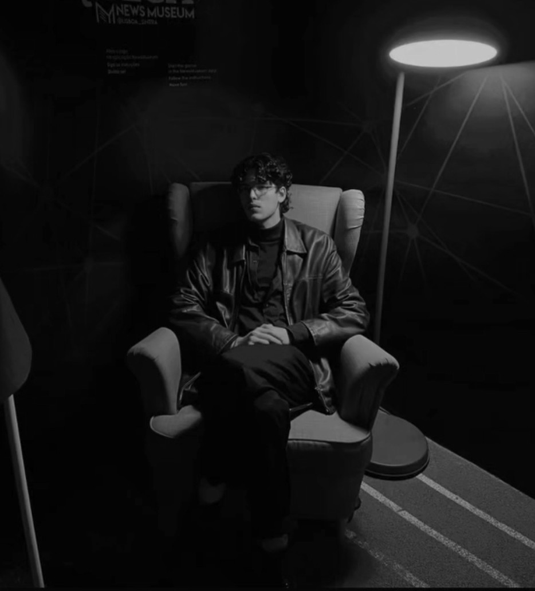
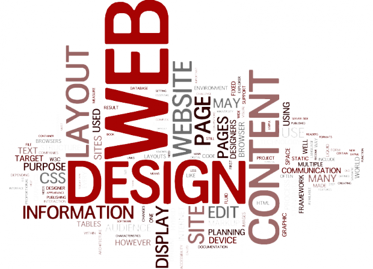

José Leite
Seja bem vindo a minha página, aqui você verá minha página e meus laboratórios de Desenvolvimento de interfaces web, eu nao sei justificar texto

Acesse meus exercícios de laboratório
Disciplina: Desenvolvimento de Interfaces Web
Esta disciplina tem como objetivo explorar os conceitos fundamentais e práticas do design e implementação de interfaces para a web. Aqui desenvolvemos laboratórios práticos, exercitando HTML, CSS, JavaScript e técnicas modernas de usabilidade e acessibilidade.
